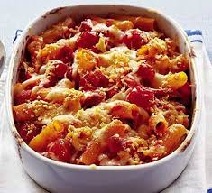

Cheesy Tomato Pasta Bake

Description
This comforting Cheesy Tomato Pasta Bake is a quick and easy weeknight
meal perfect for the whole family. It's loaded with pasta, a flavorful
tomato sauce, and plenty of melty cheese.
Ingredients
- Pasta (elbow, penne, or rotini) 8 oz (uncooked)
- Olive oil 2 tablespoons
- Onion 1, chopped
- Garlic 2 cloves, minced
-
(Optional) Ground meat (beef, sausage, or turkey) 1 pound, browned and
crumbled
- Crushed tomatoes (canned) 1 (28-ounce) can
- Tomato paste 1 tablespoon
- Italian seasoning 1 teaspoon
- Salt and pepper to taste
- Milk 1 cup
- Shredded mozzarella cheese 2 cups
- Parmesan cheese 1/2 cup
Steps
- Preheat oven to 375°F (190°C).
- Cook pasta according to package directions. Drain and set aside.
- Heat olive oil in a large skillet over medium heat.
- Add onion and cook until softened, about 5 minutes.
- Add garlic and cook for 30 seconds, or until fragrant.
-
(Optional) If using meat, add it to the skillet and cook until browned
and crumbled.
-
Stir in crushed tomatoes, tomato paste, Italian seasoning, salt, and
pepper.
- Bring to a simmer and cook for 10 minutes, stirring occasionally.
- In a large bowl, combine cooked pasta and tomato sauce.
- Stir in 1 cup of milk and 1 cup of mozzarella cheese.
- Pour the mixture into a greased baking dish.
- Top with remaining mozzarella cheese and Parmesan cheese.
- Bake for 20-25 minutes, or until cheese is melted and bubbly.
- Let stand for 5 minutes before serving.